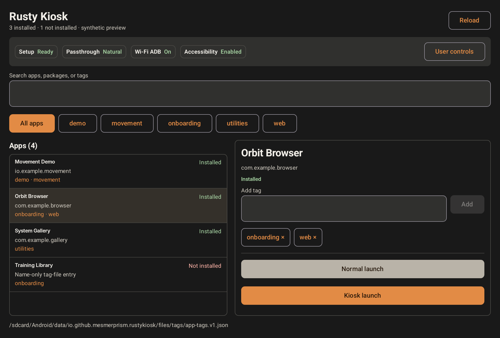
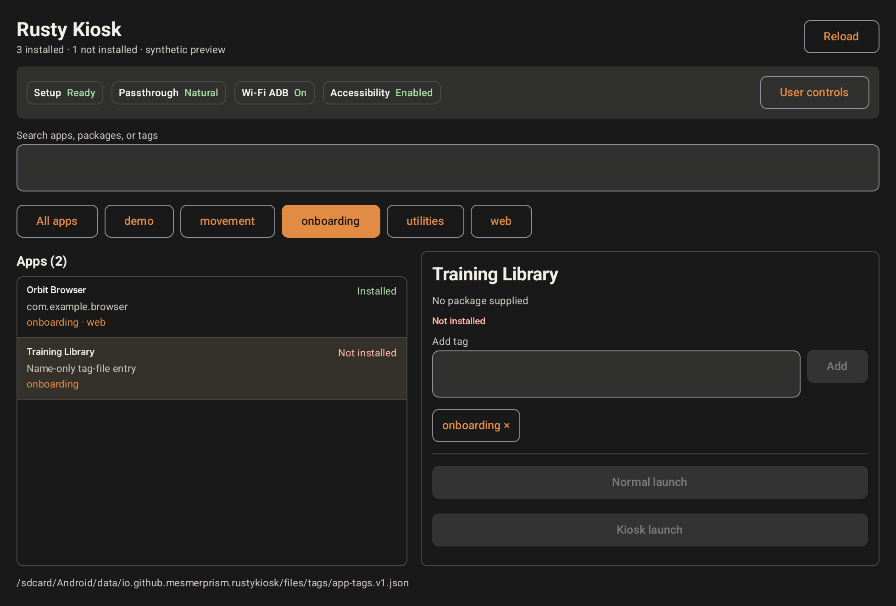
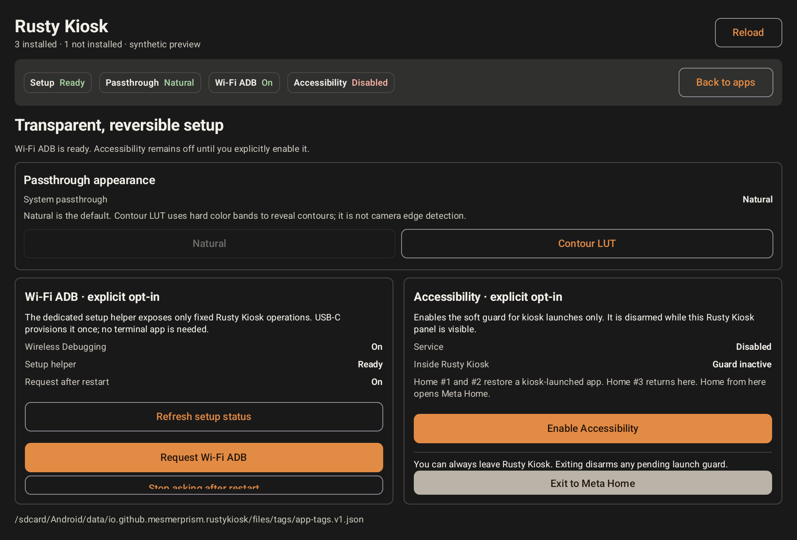

Find an app
Search apps from Meta's store and apps you installed yourself, or show only the apps carrying a chosen tag.
For Meta Quest
Search the apps already on your headset, organize them with tags, and open one normally or in kiosk mode. The launcher sits in a single panel over passthrough and always leaves the wearer a route back to Meta Home.
File Manager is the recommended setup route. Advanced operators can also download the signed Kiosk APK pair, license, source pointer, and verification manifest from GitHub Releases.
Current public preview
The tested Alpha.8 setup has two parts: File Manager Labs installs and provisions the full Kiosk core; the Meta Alpha installs a small launcher that opens that trusted core.
Install the core first. The Meta app does not install or update Rusty Kiosk itself. On Windows, use File Manager Labs 0.5.0-alpha.8 and choose Install and provision (USB); it embeds the exact signed Kiosk 0.6.6-alpha.8 bundle.
This link-only preview requires Developer Mode and one authorized USB connection for initial core setup. The per-app Wi-Fi on/off launch requirement is included and is separate from optional Wi-Fi ADB.
It replaces repeated trips through the Quest app library with one small, searchable catalogue.
Search apps from Meta's store and apps you installed yourself, or show only the apps carrying a chosen tag.
Add tags such as Demo, Study, or Games. The same tag file can be reused on another headset.
Use a normal launch for ordinary Quest behavior, or kiosk launch when you want the selected app to be restored after Home.
Give an app an optional Wi-Fi requirement. When it is not met, Kiosk opens visible Android Wi-Fi settings instead of changing the radio itself.
These source-rendered views use sample apps and tags. They show the same controls and states you will see in Rusty Kiosk.

Use the search field or the tag row, then select an app on the left. Its tags and the two launch choices appear on the right.

A portable tag can name an app that is absent from this headset. The entry stays visible but is marked Not installed, and its launch buttons are disabled.

User controls shows the effective status of passthrough, Wi-Fi ADB, and the soft guard. This is also where you can disable them or leave for Meta Home.
The recommended route handles installation and the narrow permission needed for kiosk mode without requiring a terminal app on the headset.
Follow the Windows setup guide. It also explains Developer Mode, Android Platform Tools, and the first USB authorization.
Use a USB data cable, put on the headset, and approve the debugging prompt. Trust only a computer you control.
In File Manager, select the ready headset, open Rusty Kiosk, and choose Install and provision (USB). Wait for the confirmed result.
Open Rusty Kiosk on the headset, then open User controls. Enable the Accessibility soft guard only if you want kiosk launch. Its status and disable action remain visible.
You remain in control. Rusty Kiosk is a normal app, not a locked system launcher. When Rusty Kiosk itself is visible, one normal Home press opens Meta Home.
The main panel keeps the everyday flow to three actions.
Enter part of an app name, or select a tag to see everything filed under it. Rusty Kiosk keeps this search, filter, and selection when a kiosk session returns to the panel; erase the search text and choose All apps when you want to start over.
Add or remove a tag if needed. A catalogue entry can remain visible even when the named app is missing; it will be marked Not installed.
Normal launch opens the app without the guard. Kiosk launch opens it with the soft guard and is available only while that guard is enabled.
Use this when you want the selected app to behave like any other Quest app.
Use this when an accidental Home press should return to the selected app instead of ending the session.
The first two separate Home presses restore the guarded app. A third Home press within five seconds returns to Rusty Kiosk. From there, press Home once to open Meta Home, or use Exit to Meta Home.
You do not need these for normal search, tags, or launching.
On a trusted local network, the optional direct link lets File Manager search the Kiosk catalogue, edit tags, and launch apps without routine ADB. Pairing is explicit and can be disabled or reset on the headset.
Import or export the tag file with File Manager, or edit its documented JSON format. Rusty Kiosk hotloads changes. Name-only entries remain visible even when that app is not installed.
Wi-Fi ADB is separate from kiosk mode and from the direct link. It may stop after a reboot or network change, and Meta always leaves its approval with the wearer.
Natural shows ordinary passthrough. Contour applies a color-banded lookup table that can make scene boundaries easier to notice.
Open User controls and check the Accessibility soft guard status. Normal launch remains available while the guard is off.
The shared tag file contains that app name, but Rusty Kiosk cannot find a matching launchable app on this headset. You can keep the entry for another headset or remove its tag.
Select the search or tag field again with a hand or controller pointer. If the field has focus but no keyboard appears, leave and reopen Rusty Kiosk before reporting the headset and Horizon OS version in an issue.
No. The recommended setup uses File Manager and USB once. Normal Kiosk use does not require a terminal app, and the optional direct link does not expose a remote shell.
For technical documentation or a bug report, visit the Rusty Kiosk repository.
{kind=link}
{kind=link}
{kind=link}